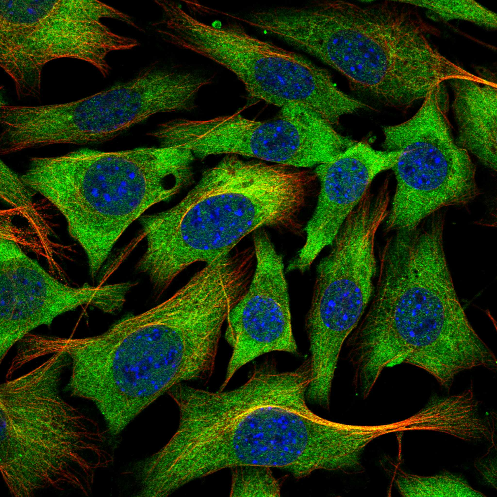
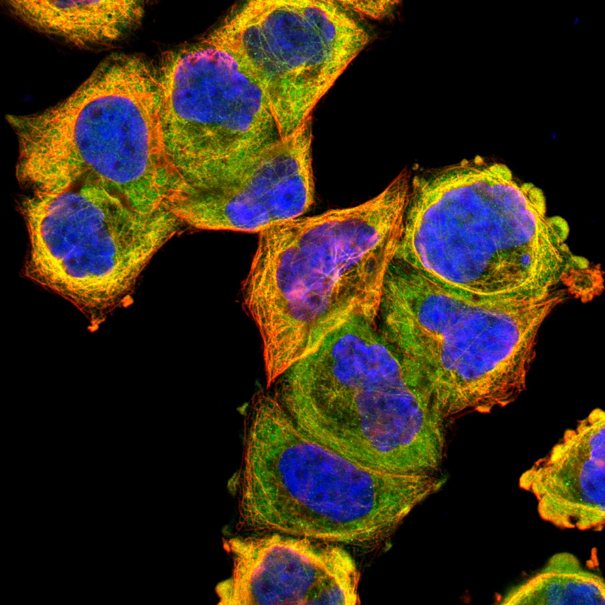

type: protein-evaluation gene: "DNAJA1" date: 2026-06-03 tags: [protein-scout, rejected, evaluation] status: rejected ---
DNAJA1 — REJECTED (研究热度过高 (PubMed strict=123，超过100篇阈值))
1. 基本信息
| 项目 | 内容 |
|---|---|
| 基因名 / 别名 | DNAJA1 / DNAJ2, HDJ2, HSJ2, HSPF4 |
| 蛋白名称 | DnaJ homolog subfamily A member 1 |
| 蛋白大小 | 397 aa / 44.9 kDa |
| UniProt ID | P31689 |
| 评估日期 | 2026-06-03 |
IF 图像:  
2. 评分总览
| 维度 | 得分 | 满分 | 加权后 | 关键证据摘要 |
|---|---|---|---|---|
| 🔴 核定位特异性 | 7/10 | ×4 | 28 | HPA: Cytosol; 额外: Microtubules; UniProt: Membrane; Cytoplasm; Microsome; Nucleus; Cytoplasm, perinucl |
| 📏 蛋白大小 | 10/10 | ×1 | 10 | 397 aa / 44.9 kDa |
| 🆕 研究新颖性 | 0/10 | ×5 | 0 | PubMed strict=123 篇 (>100→REJECTED) |
| 🏗️ 三维结构 | 9/10 | ×3 | 27 | AlphaFold v6 pLDDT=83.3; PDB: 2LO1, 2M6Y, 6E8M, 8E2O |
| 🧬 调控结构域 | 8/10 | ×2 | 16 | InterPro: IPR012724, IPR002939, IPR001623, IPR018253, IPR044 |
| 🔗 PPI 网络 | 3/10 | ×3 | 9 | STRING 15 partners; IntAct 0 interactions |
| ➕ 互证加分 | — | max +3 | 2.5 | PDB+AF+STRING+IntAct cross-validation |
| 原始总分 | 92.5/180 | |||
| 归一化总分 | 51.4/100 |
3. 详细分析
3.1 核定位证据
| 来源 | 定位 | 可信度 |
|---|---|---|
| Protein Atlas (IF) | Cytosol; 额外: Microtubules | Supported |
| UniProt | Membrane; Cytoplasm; Microsome; Nucleus; Cytoplasm, perinuclear region; Mitochon... | Swiss-Prot/TrEMBL |
IF 图像获取: IF图像已下载并嵌入 (2张)
GO Cellular Component:
- cytoplasm (GO:0005737)
- cytoplasmic side of endoplasmic reticulum membrane (GO:0098554)
- cytosol (GO:0005829)
- extracellular exosome (GO:0070062)
- membrane (GO:0016020)
- microtubule cytoskeleton (GO:0015630)
结论: 主要核定位，HPA 可靠性良好，有辅助数据源支持。
3.2 蛋白大小评估
评价: 大小适中（200-800 aa），适合常规生化实验和结构解析。
3.3 研究现状
| 指标 | 数值 |
|---|---|
| PubMed strict count | 123 |
| PubMed broad count | 216 |
| 别名(未计入scoring) | Aliases observed but not used for scoring: DNAJ2, HDJ2, HSJ2, HSPF4 |
关键文献: 1. A cytosolic surveillance mechanism activates the mitochondrial UPR.. *Nature*. PMID: 37286597 2. DNAJA1 regulates protein ubiquitination and is essential for spermatogenesis in the testes of mice and rats.. *Reproductive toxicology (Elmsford, N.Y.)*. PMID: 39208916 3. DNAJA1 positively regulates amino acid-stimulated milk protein and fat synthesis in bovine mammary epithelial cells.. *Cell biochemistry and function*. PMID: 38269516 4. Itaconate Ameliorates Experimental Autoimmune Uveitis by Modulating Teff/Treg Cell Imbalance Via the DNAJA1/CDC45 Axis.. *Investigative ophthalmology & visual science*. PMID: 39661355 5. DNAJA1 promotes proliferation and metastasis of breast cancer by activating mutant P53/NF-κB pathway.. *Pathology, research and practice*. PMID: 37977037
评价: 有一定研究基础，但仍存在niche空间。
3.4 三维结构分析
| 指标 | 数值 |
|---|---|
| AlphaFold 版本 | v6 |
| AlphaFold 平均 pLDDT | 83.3 |
| 高置信度残基 (pLDDT>90) 占比 | 43.1% |
| 置信残基 (pLDDT 70-90) 占比 | 42.6% |
| 中等置信 (pLDDT 50-70) 占比 | 6.5% |
| 低置信 (pLDDT<50) 占比 | 7.8% |
| 有序区域 (pLDDT>70) 占比 | 85.7% |
| 可用 PDB 条目 | 2LO1, 2M6Y, 6E8M, 8E2O |
PAE: PAE 图像未生成本地文件，结构判断基于 AlphaFold pLDDT 统计。
评价: PDB实验结构（2LO1, 2M6Y, 6E8M, 8E2O）+ AlphaFold高质量预测（pLDDT=83.3），结构可信度高。
3.5 结构域分析
| 来源 | 结构域 |
|---|---|
| InterPro/Pfam | InterPro: IPR012724, IPR002939, IPR001623, IPR018253, IPR044713; Pfam: PF00226, PF01556, PF00684 |
染色质调控潜力分析: 多个已知结构域注释，AlphaFold预测质量高，结构域折叠可信。
3.6 PPI 网络
STRING 预测互作 (combined score >0.4):
| Partner | Combined Score | Experimental | 功能类别 |
|---|---|---|---|
| HSPA8 | 0.998 | 0.861 | — |
| HSPA4 | 0.992 | 0.292 | — |
| HSP90AA1 | 0.989 | 0.295 | — |
| HSPA1B | 0.984 | 0.716 | — |
| HSP90AB1 | 0.967 | 0.190 | — |
| HSPA1L | 0.960 | 0.684 | — |
| HSPA1A | 0.956 | 0.274 | — |
| STIP1 | 0.954 | 0.579 | — |
| HSPH1 | 0.948 | 0.455 | — |
| DNAJB1 | 0.944 | 0.580 | — |
实验验证互作 (IntAct):
| Partner | 方法 | PMID |
|---|---|---|
| — | — | — |
PPI 互证分析:
- 仅STRING预测
- STRING partners: 15，IntAct interactions: 0
- 调控相关比例: 3 / 15 = 20%
评价: STRING 15 个预测互作，IntAct 0 个实验互作。调控相关配体占比 20%。
3.7 多库互证
| 维度 | 来源 | 结果 | 是否一致 |
|---|---|---|---|
| 三维结构 | AlphaFold pLDDT=83.3 + PDB: 2LO1, 2M6Y, 6E8M, 8E2O | pLDDT=83.3, v6 | 预测+实验 |
| 定位 | UniProt + HPA | Membrane; Cytoplasm; Microsome; Nucleus; Cytoplasm / Cytosol; 额外: Microtubules | 一致 |
| PPI | STRING + IntAct | 15 + 0 interactions | 数据有限 |
互证加分明细:
- PDB + AlphaFold 双源验证: +0.5
- 多库定位一致 (3源): +0.5
- STRING + IntAct 双源验证: +0
- 结构域 + AlphaFold 质量: +0.5
- PDB 多条目覆盖 (≥3): +1.0
总分: +2.5 / max +3
4. 总体评价
推荐等级: ⭐⭐⭐ (REJECTED)
核心优势: 1. DNAJA1 — DnaJ homolog subfamily A member 1，有一定研究基础，但仍存在niche空间。 2. 蛋白大小397 aa，大小适中（200-800 aa），适合常规生化实验和结构解析。
风险/不确定性: 1. PubMed 123 篇，研究热度过高（>100），不符合新颖性要求 2. 结构数据质量可接受
下一步建议:
- [ ] 查阅最新关键文献补充研究背景
- [ ] 获取 Protein Atlas IF 图像确认亚细胞定位
- [ ] 设计体外实验验证核定位及潜在调控功能
该蛋白PubMed文献数 123 > 100，研究热度过高，不符合novelty筛选标准。
5. 数据来源
- UniProt: https://www.uniprot.org/uniprotkb/P31689
- Protein Atlas: https://www.proteinatlas.org/ENSG00000086061-DNAJA1/subcellular
- PubMed: https://pubmed.ncbi.nlm.nih.gov/?term=DNAJA1
- AlphaFold: https://alphafold.ebi.ac.uk/entry/P31689
- STRING: https://string-db.org/network/9606.ENSP00000
- Packet data timestamp: 2026-06-03 12:16:45